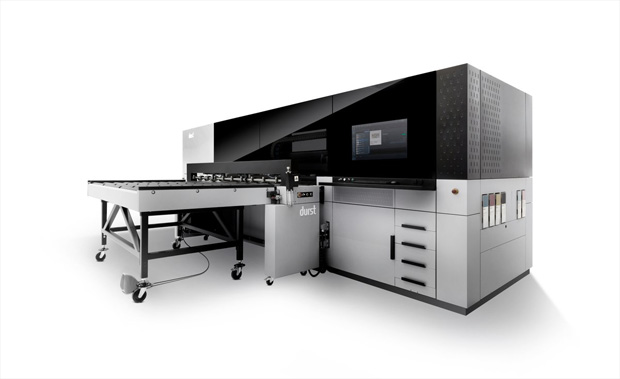

Планшетный принтер УФ-печати DURST P5 250 HS
В сентябре 2018 у нас появился первый в России новейший и самый быстрый UV принтер Durst P5 250 HS (High Speed). Производительность P5 увеличилась на 70% по сравнению с предыдущим нашим печатным флагманом P10 HS. Принтер P5 250 HS рассчитан как на большие тиражи, так и на печать единичных экземпляров высокого качества. Основными пятью технологическими принципами заложенными при создании Р5 являются производительность, надёжность, универсальность, автоматизация производственного процесса и высокое качество печати. Размер капли в 5 пкл позволяет получать качество, сравнимое с офсетной печатью.
Характеристики
- Разрешение печати: 1200 dpi
- Тип чернил: УФ-отверждаемые
- Максимальная ширина материала: 2500 мм.
- Максимальная толщина материала: до 40 мм.
- Максимальная скорость: 240 м2/ч
Основные области применения:
- Производство POS материалов (ростовых фигур, хардпостеров, стопперов , чекпоинтов, промостоек, брендированной упаковки)
- Изготовление имиджей для брендирования торгового рекламного оборудования (топперы, стикеры)
- Материалы для световой рекламы (транслюцентная пленка, backlit, оргстекло, акрил).
- Пленки для витрин, окон, витражей
- Оформление мест продаж, интерьеров магазинов, банков, выставочных стендов .
- Изготовление жестких постеров (прямая печать на ПВХ, пенокартоне, Гофорокартоне и т.д.)
240 м2/ч
1200 DPI